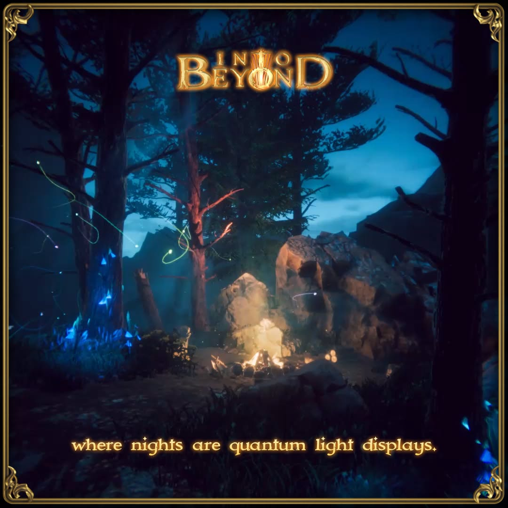

Jest to zbiór projektów komercyjnych, w których brałem udział.

Foczka Nina to interaktywna atrakcja dla najmłodszych, łącząca zabawę z nauką o świecie morskich zwierząt.
Zobacz

Przenieś się do realistycznego świata jurajskich stworzeń. Załóż magiczne gogle VR i rozpocznij swoją misję.
Zobacz

Into BeYond to jednoosobowa gra RPG akcji osadzona w mistycznym, wciągającym i żywym świecie.
Zobacz

Sieciowa gra VR, w której gracze za zadanie mają obrone wioski/miasta przed hordami orków przy użyciu łuku i czarów. W grze istnieje również tryb PvP.
Zobacz

Gra VR, w której gracze za zadanie mają bronić swojego zamku przed hordami atakujących wrogów przy użyciu budowania wież obronnych. W grze istnieje również tryb PvP, w którym gracze jednocześnie bronią i atakują się naprzemiennie.
Zobacz